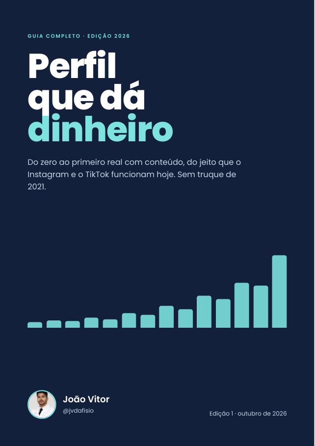

2,6 mi
Segurar até o último segundo.
Sem fala: a imagem prende e o corte não deixa sair.
Serve pra: crescer e ser descoberto
Vídeo pra crescer, vídeo pra trazer paciente e vídeo pra vender não se gravam nem se editam do mesmo jeito. Antes de gravar, a gente decide qual é o seu.
Sem fala: a imagem prende e o corte não deixa sair.
O rosto do fisio e uma dúvida real de paciente.
Ensinou o método, mostrou a bomba e pediram o link.
Mesma clínica, mesmo fisioterapeuta. Toque pra alternar.
O "depois" teve 233 curtidas e 76 comentários.
FisioGolden Saúde, clínica de fisioterapia esportiva do Jefferson Teixeira, em Montes Claros. No segundo vídeo que fizemos juntos, o Reel fez 5 vezes o que um vídeo típico do perfil fazia antes.
View de quem mora perto. O conteúdo fala com o paciente de Montes Claros, e essas visualizações locais já estão virando paciente na clínica.
Não precisa de pacote mensal. Faço o vídeo que você precisa: comercial, divulgação de curso, cobertura de evento ou depoimento. Alguns que já fiz, além dos de cima:
Gravar bem dá a matéria-prima: luz, som e a frase certa. A edição decide se a pessoa fica. Ao lado, o mesmo vídeo como saiu do celular e como foi pro ar. É isso que entra no seu:
Toque pra alternar. Vídeo "Tenho todos", @jvdafisio.
A Ju monetiza o conteúdo dela com produto digital, loja própria e link de afiliada. Somando tudo que já entrou:
Valores tirados direto das contas da Kiwify, da Shopee e do Mercado Livre. Resultado de um perfil não é promessa de resultado para outro.
O processo que eu uso, em PDF: pensar o gancho, montar o roteiro e gravar com o celular sem travar. No checkout, o Kit Edição Viral entra por R$ 9,90 pra você editar também.
Quero o Gravar Sem Travar · R$ 19,90 → Prefere aula comigo? Chama no WhatsAppTe mostro o caminho que a gente usa no @ordenhasdaju: vídeo que alcança gente nova, produto digital na Kiwify, loja e link de afiliado na Shopee.
Chamar no WhatsApp →A gente olha o seu perfil e os seus vídeos juntos e monta o que gravar, como editar e o que vender. Do seu jeito e no seu ritmo.
Quero a consultoria →Pra clínica, profissional de saúde, curso ou marca. Acompanhamento mensal ou vídeo avulso: roteiro, direção da gravação, edição, legenda e capa.
Chamar no WhatsApp →No WhatsApp, do seu jeito. Conta o que precisa e, se tiver, manda o seu perfil ou um vídeo de exemplo.
Te mando a proposta e o plano do vídeo: o que gravar, onde e quando fica pronto.
Eu gravo ou edito, você confere, e o vídeo sai pronto pra postar.
Levando um, os outros aparecem no checkout com desconto: o Gravar e o Kit por R$ 9,90, o Perfil por R$ 19,90.

Da ideia ao último take, só com o celular: o tema, o gancho, o roteiro e a gravação sem travar na frente da câmera.

As fontes, as cores e os sons certos pra cada momento do seu vídeo, com o mapa que eu uso nos vídeos que edito.

Do zero ao primeiro real com conteúdo, do jeito que o Instagram e o TikTok funcionam hoje.
Edito vídeo de saúde, maternidade, curso e negócio local. O que muda de um nicho pro outro é o roteiro e a identidade: cada cliente tem a sua fonte, a sua cor e o seu jeito de legenda.
Não. Dá pra fazer com objeto, tela, narração ou com quem trabalha com você. O vídeo da coluna com Oreo, o de 2,6 milhões de views, não tem ninguém falando.
Pelo WhatsApp ou por um link do Google Drive, do jeito que saiu do celular, sem editar nada.
A edição fica pronta em até 3 dias úteis. Se for urgente, me fala no WhatsApp que a gente vê o prazo.
Cada vídeo tem uma rodada de ajuste inclusa. Você vê antes de postar e me fala o que mudar.
Não, e desconfie de quem garante. Eu garanto um vídeo bem editado, com começo forte e num formato que já funciona. A view depende também do assunto, do perfil e do dia.
A edição e a mentoria são online, pra qualquer lugar. Gravação presencial e cobertura de evento, só em Montes Claros.
Do seu jeito, no WhatsApp. O tipo de coisa que chega pra mim:
Chamar no WhatsApp → (38) 99999-7025